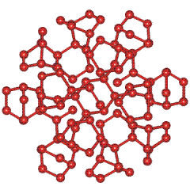

The ES structure consists of a 280-water-molecule cluster with icosahedral (Ih) symmetry, one of the highest symmetries possible in nature with a surface similar to the faces of an 'expanded' small rhombicosidodecahedron (with 12 regular pentagons, 20 regular triangles and 30 rectangles as faces).
Above are shown representative views of one of the fifteen two-fold rotation axes (C2, a), one of the ten three-fold rotation axes (C3, b), and one of the six five-fold rotation axes (C5, c); only the oxygen atoms of the constituent water molecules are shown (for interactive structures, see Jmol).
The icosahedral water cluster as made up from 14-water-molecule water tetrahedra (a1 and a2)
or from water cyclic pentamers and tricyclo-decamers (b1 and b2).
a1 and b1 are shown orthogonal to a2 and b2 respectively. Only the oxygen atoms of the constituent water molecules are shown. Hydrogen bonds within the structures are shown but hydrogen-bonding between structures are not shown. For interactive Figures, see Jmol.
Eight water molecules may cluster by hydrogen bonding to form bicyclo-octamers (paddlane-like). The hydrogen-bonding arrangements are random within the restraints of hydrogen bonding.

These clusters are highly symmetrical, having one axis of three-fold symmetry C3 and three axes of two-fold symmetry C2. They are, therefore particularly favored clusters. The icosahedral water cluster may be considered as being made up entirely from such bicyclo-octameric water clusters. All the water molecules may be part of three such clusters. In order to see some of these more clearly, 64 of the 280 water molecules have been removed from the water icosahedron. Only the oxygen atoms of the constituent water molecules are shown. Hydrogen bonds within the structures are shown, but hydrogen bonding between structures is not shown.
For interactive Figures, see Jmol.
Home | Site Index | Icosahedral water clusters (Jmol) | LSBU | Top
This page was established in 2003 and last updated by Martin Chaplin on 4 October, 2021